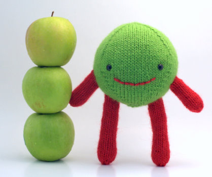
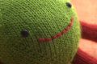
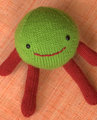
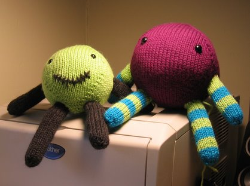
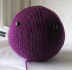

|
||
Premium Patterns Wintry Mix Mitts Love Bytes HawkeyeFree Patterns Kiddie Cadet Summerlin Ruffled Scarf Seamless DS Sock Simply Seamless Pouch Myriads of MushroomsExtras DIY Mitten Blocker Felt Patch Tutorial Yarn Dyeing Tutorial Needle Pouches Knitting Journal |
August 07, 2007 - Posted by Grace SchneblyThree Apples Tall Project Specs I’ve always loved the Spherey, and here he is! My very first Spherey made from the instructions given in the Unusual Toys booklet. I’ve named him Smitty, and boy does that name bring back some memories from my teenage years. Not that I actually knew anyone named Smitty, but whatever! Anyways his name is Smitty because he absolutely loves Granny Smith apples, and sometimes thinks he is one! I love him because he is eternally happy, albeit a little jealous of Mr. Dangly’s photo shoot. Maybe someday very soon Smitty! The Spherey pattern is a really easy and quick knit, although I did have some problems right at the start. Like I said before I tend to knit really tightly on double pointed needles, making it really difficult to do the increases. Now I can barely notice my tension problems, and I just don’t really care because he is so cute! I used 5” double points, but would really recommend using longer needles because it can really get difficult keeping all of those stitch on the needles when you get to the widest part of his body. Other than that knitting him was easy peasy. I think the hardest part of the Spherey pattern is adding the face and stuffing him into the right shape. For the eyes I used 9mm black safety eyes, and the mouth is more of the Lamb’s Pride Worsted in Blue Blood Red. I really stink at embroidery and have a real respect for people who can do it well. I just used a back stitch and am happy with how it turned out. I have one philosophy when it comes to stuffing a Spherey, you can never overstuff. It’s kind of hard to get a good sphere shape, but you just have to keep on adding stuffing and molding it into shape. It can be hard to avoid lumps though, and mine isn’t perfect by any means. But even after you close up the top of the head, you can still work at molding it into shape. I said this was the first one I made using the actual Spherey pattern. Last year I knit two fake of Sphereys. The Poor Man’s Spherey came about when Alice and I were searching everywhere for the Jess Hutchison Unusual Toys to Knit booklet. There were only a minimal amount of copies made, and the prices have now shot up from $13 to over $90 on ebay! This leaves a huge amount of people without access to any Jess Hutch patterns, except for Bunny or Kate. I’ve always wanted a Spherey, so we finally came up with a way to make one using information readily available on the internet. This pattern is just a modification of the Kate pattern from Knitty. It’s really just Kate’s butt and the top of her head. All you will need is access to the Kate pattern, which is available for free. The arms and legs are directly from the Jess Hutch Bunny pattern. So here we go…  The Poor Man’s Spherey(head/body) – Knit all in one color, ignore any color change instructions given in Kate pattern. Use size US6 double pointed needles for head as well as arms and legs. Follow the Head/Body instructions for Kate, omitting rows 38-52. Or here’s another way of putting it… Knit Round 1-37 of the Head/Body instructions for Kate. Skip Rounds 38-52 completely. Continue directly to Round 53 and follow instructions for Kate Rounds 53-63. Follow body stuffing and finishing instructions given in Kate pattern. (arms) (legs) So how close is this to the actual Spherey pattern? It is very close! The instructions for the body/head aren’t exactly the same, but they are so close I don’t think you or anyone else will know the difference. I made my Poor Man’s Sphereys using a combo of Patons Classic Wool and Cascade 220 on size US7 needles. I really think that using US6 needles is the way to go for these guys though. The smaller needles prevent any fiberfill from peeking through. For the larger sized Poor Man’s Spherey, I completed two extra increase rows for a total of 12, instead of the recommended 10. Just knitting a few extra rows really made him a lot bigger!! Sorry I don’t have better picture of these little fellows, I made the before we had our blog and gave them to a friend last year. So if you’ve always wanted to make a Spherey, but can’t get your hands on the pattern, give the Poor Man’s Spherey a try! |
   Recent ReviewsRecent Posts
 Our Favorites
|
| © 2007 KathrynIvy.com | ||
{kind=link}
{kind=link}
{kind=link}